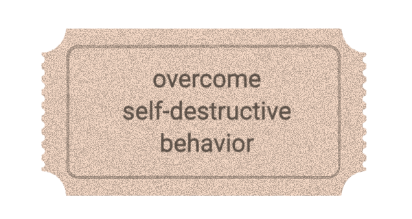
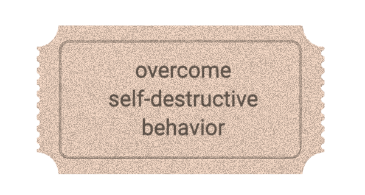

YOUR LIFE WITH A SENSUAL LIBERATION RETREAT


 

Together with a selected group of conscious placeholders, who accompany you in this journey to oneness, you will be placed in tantric settings in the most picturesque locations.
We guide you through transformative experiences that awaken your authentic self. Through carefully crafted tantric practices, breathwork, and conscious connection, you'll discover new dimensions of presence, pleasure, and personal power in sacred settings around the world.
At forbidden yoga, we replaced the fundamental element of the Freudian psychoanalytic setting, the couch, with your nude body.

Instead of a counseling room, we place each client into a dream-scape setting to facilitate their journey to total transformation.
Accompanied by 1 to 12 (or more) placeholders actors, the client dives into ancient tantric practices, rituals and games.


Invest in yourself now with a SLR retreat,
Harvest magic for a lifetime.
A unique opportunity to open yourself up to a vortex of infinite creativity and daring selfexpression.
* TANTRA MASTER
& LINEAGE HOLDER
GUARDIAN OF VANISHING LEFT-HANDED TANTRIC HERITAGE
Michael Wogenburg carries a rare Indian Shakta tantric lineage - one of the few recognized Western masters preserving authentic left-handed traditions nearly lost to history. Over 25 years, he has reconstructed extinct consciousness practices that scholars cannot trace. His bespoke retreats serve high-net-worth individuals seeking transformational mastery beyond conventional spirituality: sexual energy work, trauma dissolution, and high-performance consciousness training. Complete privacy. Uncompromising depth. Available for exclusive private instruction worldwide.
A carefully selected group of conscious placeholders will accompany you in the daily practices and rituals
Our team carefully profiles you for a month to provide you with the most suited and unique setting for your personalized retreat
Based on your profile we carefully choose the most beautiful and spiritually powerful location for your one of a kind experience
An initiation to transformative tantric techniques and night rituals you have never heard of or experienced before